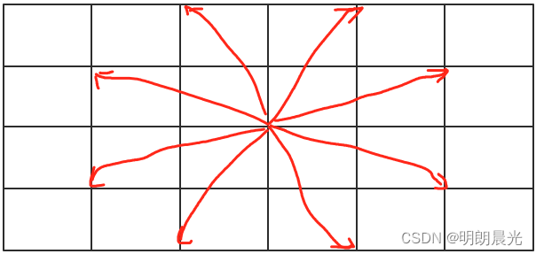

datetime:2024/3/2 15:49
author:nzb
暴力递归到动态规划
动态规划就是暴力尝试减少重复计算的技巧而已，这种技巧就是一个大型套路
先写出用尝试的思路解决问题的递归函数，而不用操心时间复杂度
这个过程是无可替代的，没有套路的，只能依靠个人智慧，或者足够多的经验
但是怎么把尝试的版本，优化成动态规划，是有固定套路的，大体步骤如下
- 1)找到什么可变参数可以代表一个递归状态，也就是哪些参数一旦确定，返回值就确定了
- 2)把可变参数的所有组合映射成一张表，有 1 个可变参数就是一维表，2 个可变参数就是二维表，......
- 3)最终答案要的是表中的哪个位置，在表中标出
- 4)根据递归过程的
base case，把这张表的最简单、不需要依赖其他位置的那些位置填好值 - 5)根据递归过程非
base case的部分，也就是分析表中的普遍位置需要怎么计算得到，那么这张表的填写顺序也就确定了 6)填好表，返回最终答案在表中位置的值
尝试 -> 记忆化搜索(dp) -> 严格表结构动态规划(dp) -> 精致版的严格表结构动态规划(dp)
- 某些问题记忆化搜索动态规划和严格表结构动态规划有相同的时间复杂度
- 严格表结构动态规划可能还有进一步优化技巧，熟悉位置依赖(比如斜率优化等)
- 关键在于尝试
- 记忆化搜索就是加缓存
尝试
- 尝试如同人生，千奇百怪
- 尝试模型：从左往右尝试(硬币问题，比如题目六)，范围尝试(拿牌问题，比如题目三)
- 优化方式需要掌握3~4种就行了
- 尝试的时候需要重点注意两点
- 每一个可变参数自己的维度
- 1个参数一维表，2个参数二维表...，参数少越好
- 维度：最好是0维参数
- 本节所有的可变参数都是整型，这种参数叫做0维参数，就是一个点，它的值的变化范围好估计
- 如果有个参数是数组，它的维度就是一维参数，变化范围太大，比如2个元素的数组可能是
[0,0],[0,1],[1, 0],[1,1]
- 可变参数个数：尽可能少，尽量0维参数
- 每一个可变参数自己的维度
题目一
机K器MP人算达法到扩指展定题位目置二方法数
- 【题目】 假设有排成一行的 N 个位置，记为 1~N，N 一定大于或等于2。开始时机器人在其中的M位置上(M 一定是 1~N 中的一个)，机器人可以往左走或者往右走，如果机器人来到1位置，那么下一步只能往右来到 2 位置;如果机器人来到 N 位置，那么下一步只能往左来到N-1位置。规定机器人必须走 K 步，最终能来到 P 位置(P 也一定是1~N 中的一个)的方法有多少种。给定四个参数 N、M、K、P，返回方法数。
- 【举例】
- N=5,M=2,K=3,P=3，上面的参数代表所有位置为 1 2 3 4 5。机器人最开始在2 位置上，必须经过3步，最后到达 3 位置。走的方法只有如下 3 种:
- 1)从2到1，从1到2，从2到3
- 2)从2到3，从3到2，从2到3
- 3)从2到3，从3到4，从4到3
所以返回方法数 3。
- N=3,M=1,K=3,P=3，上面的参数代表所有位置为 1 2 3。机器人最开始在 1 位置上，必须经过3 步，最后到达3位置。怎么走也不可能，所以返回方法数 0。
- N=5,M=2,K=3,P=3，上面的参数代表所有位置为 1 2 3 4 5。机器人最开始在2 位置上，必须经过3步，最后到达 3 位置。走的方法只有如下 3 种:
暴力尝试
def walk_ways(n, m, k, p):
return process(n, p, k, m)
def process(n, p, rest, cur):
"""
暴力尝试
:param n: 一共 1~N 这么多位置， 固定参数
:param p: 最终的目标是E， 固定参数
:param rest: 还剩多少不要走， 可变参数
:param cur: 当前位置， 可变参数
:return: 返回方法数
"""
if rest == 0: # base case
return 1 if cur == p else 0
if cur == 1: # 1 位置只能往右走到2
return process(n, p, rest - 1, 2)
elif cur == n: # N 位置只能往左走到N-1
return process(n, p, rest - 1, n - 1)
# 中间的位置可以往左或往右走，走向左、走向右是截然不同的方法，所以总方法数要都算上
return process(n, p, rest - 1, cur - 1) + process(n, p, rest - 1, cur + 1)
print(walk_ways(5, 2, 4, 4))
记忆化搜索动态规划
"""
一旦可变参数确定，结果就确定了
例如：1 2 3 4 5，当前在2，走4步，最终要到4，递归过程
f(4,2) 最终需要的答案,(剩余步数，当前位置)
/ \
f(3,1) f(3,3)
|(只能右走) / \
f(2,2) f(2,2) f(2,4)
f(2,2)重复了，每次都要重新展开去计算，多了很多重复解
因此可以使用缓存记录f(2,2)的结果，下次遇到直接拿结果，而不去展开计算
"""
# 优化，记忆化搜索版本
def walk_ways2(n, m, k, p):
# 2个可变参数 -> 二维表
# 表开多大，看暴力尝试里面2个可变参数大小
# rest都是减一，所以 0~K
# cur 一定在 1~N
dp = [[-1 for _ in range(n + 1)] for _ in range(k + 1)] # 缓存结构
return process2(n, p, k, m, dp)
def process2(n, p, rest, cur, dp):
"""
记忆化搜索动态规划
:param n: 一共 1~N 这么多位置， 固定参数
:param p: 最终的目标是p， 固定参数
:param rest: 还剩多少不要走， 可变参数
:param cur: 当前位置， 可变参数
:return: 返回方法数
"""
# 缓存命中
if dp[rest][cur] != -1: # != -1, 计算过
return dp[rest][cur]
# 缓存没命中
if rest == 0: # base case
dp[rest][cur] = 1 if cur == p else 0
return dp[rest][cur]
# rest > 0 还有路可走
if cur == 1: # 1 位置只能往右走到2
dp[rest][cur] = process2(n, p, rest - 1, 2, dp)
elif cur == n: # N 位置只能往左走到N-1
dp[rest][cur] = process2(n, p, rest - 1, n - 1, dp)
else:
# 中间的位置可以往左或往右走
dp[rest][cur] = process2(n, p, rest - 1, cur - 1, dp) + process2(n, p, rest - 1, cur + 1, dp)
return dp[rest][cur]
print(walk_ways2(5, 2, 4, 4))
严格表结构动态规划
严格表结构只字未提之前的规划是是什么含义，只根据递归结构分析出，通过位置依赖信息来确定
- N=5, P=4, M=2, k=4，画表
| 0 | 1 | 2 | 3 | 4 | 5 | |
|---|---|---|---|---|---|---|
| 0 | 0 | 0 | 0 | 0 | 1 | 0 |
| 1 | ||||||
| 2 | ||||||
| 3 | ||||||
| 4 | ☆ |
- 行为rest，列为cur
- 主函数调用的就是，最终要的位置
f(4,2)，当前位置在2，走4步的结果，即表中星号 - 然后看
base case哪些可以直接得到答案的- cur == P == 4 ? 1 : 0，所以第一行数据如上
- 继续看递归
- cur 可能等于0吗，不可能，因为cur 在1~N范围，所以第一列不可能
| 0 | 1 | 2 | 3 | 4 | 5 | |
|---|---|---|---|---|---|---|
| 0 | x | 0 | 0 | 0 | 1 | 0 |
| 1 | x | |||||
| 2 | x | |||||
| 3 | x | |||||
| 4 | x | ☆ |
- 继续看递归
- cur == 1，
process2(N, E, rest - 1, 2, dp)，依赖rest-1位置的东西，右上角的值拷贝过来就行了 - 同理，cur == 1，
process2(N, E, rest - 1, N - 1, dp)，依赖rest-1位置的东西，右上角的值拷贝过来就行了
- cur == 1，
| 0 | 1 | 2 | 3 | 4 | 5 | |
|---|---|---|---|---|---|---|
| 0 | x | 0 | 0 | 0 | 1 | 0 |
| 1 | x | ↗ | ↖ | |||
| 2 | x | ↗ | ↖ | |||
| 3 | x | ↗ | ↖ | |||
| 4 | x | ↗ | ☆ | ↖ |
- 继续看递归，中间位置，依赖左上角+右上角的位置
| 0 | 1 | 2 | 3 | 4 | 5 | |
|---|---|---|---|---|---|---|
| 0 | x | 0 | 0 | 0 | 1 | 0 |
| 1 | x | ↗ | . | . | ↖ | |
| 2 | x | ↗ | ↖↗ | ↖ | ||
| 3 | x | ↗ | ↖ | |||
| 4 | x | ↗ | ☆ | ↖ |
- 依次填满表，就可以知道星号位置的数
| 0 | 1 | 2 | 3 | 4 | 5 | |
|---|---|---|---|---|---|---|
| 0 | x | 0 | 0 | 0 | 1 | 0 |
| 1 | x | 0 | 0 | 1 | 0 | 1 |
| 2 | x | 0 | 1 | 0 | 2 | 0 |
| 3 | x | 1 | 0 | 3 | 0 | 2 |
| 4 | x | 0 | 4 |
def walk_ways3(n, m, k, p):
"""
严格表结构
:param n: 1~n位置
:param m: 当前位置
:param k: 走k步
:param p: 目标位置
:return:
"""
if n < 2 or k < 1 or m < 1 or m > n or p < 1 or p > n:
return 0
dp = [[0 for _ in range(n + 1)] for _ in range(k + 1)] # [[cur], [], rest]
dp[0][p] = 1 # base case, 剩余0步，刚好当前位置在p
for i in range(1, k + 1):
for j in range(1, n + 1):
if j == 1: # 第一个位置
dp[i][j] = dp[i - 1][2] # 右上角
elif j == n:
dp[i][j] = dp[i - 1][n - 1] # 左上角
else:
dp[i][j] = dp[i - 1][j - 1] + dp[i - 1][j + 1]
# 主函数要的是f(4,2), 当前在2，走4步的结果
return dp[k][m]
print(walk_ways3(5, 2, 4, 4))
时间复杂度
- 暴力尝试时间复杂度，可以看出二叉树，树高K步，所以最差为 O(2^K)
- 记忆化搜索动态规划时间复杂度和严格表结构动态规划时间复杂度一样，dp表为KN的规模，最差为 O(KN)
题目二
组合最少硬币数
- 【题目】给定数组 arr，arr 中所有的值都为正数可能重复。每个值代表一枚货币，再给定一个整数 aim，代表要找的钱数，求组成aim的最少货币数。
- 【举例】
arr=[2,7,3,5,3], aim=10：7+3=10, 所以结果为0
暴力尝试
# 暴力尝试：尝试模型从左往右
def coins_min(arr, aim):
return process(arr, 0, aim)
def process(arr, idx, rest):
"""
:param arr: 硬币数组，固定参数
:param idx: 索引
:param rest: 剩余多少还有组成
:return: 可以组成的数最少硬币数
"""
if rest < 0:
return -1 # 永远组成不了，无效解不能使用0，为什么，因为0有具体含义，0代表有效，表示返回0个硬币
if rest == 0:
return 0 # 组成刚好，需要0枚硬币，不在需要硬币了
# rest > 0
if idx == len(arr): # 没硬币可选，rest > 0
return -1
# rest > 0, 还有硬币
# 用和不用当前硬币去最小的那个，但是有个-1会干扰求最小值
# return min(process(arr, idx + 1, rest), 1 + process(arr, idx + 1, rest - arr[idx]))
# 优化
p1 = process(arr, idx + 1, rest)
p2_next = process(arr, idx + 1, rest - arr[idx]) # 可能性2的后续
if p1 == -1 and p2_next == -1: # 怎么做选择都是错的，所以返回-1
# 比如[2,3,100,200], aim=5, 如果你没有要2和3,到100的时候，要和不要都是错的
return -1
elif p1 == -1:
return 1 + p2_next
elif p2_next == -1:
return p1
else: # 2个都不是-1，做决策
return min(p1, p2_next + 1)
print(coins_min([2, 7, 3, 5, 3], 10))
"""
arr=[2,3,100] aim=5
f(0,5) # (idx, aim)
不要2/ \要2
f(1,5) f(1,3)
不要3/ \要3 x3/ \要3
f(2,5) f(2,2) f(2,3) f(2,0)
/ \ / \
f(3,5) f(3,-95) f(3,3) f(3,-97)
f(2,0)会返回 0，2位置往后的货币要搞定0块钱
f(2,5): 因为下面2个状态都是-1，所以当前状态也返回-1
f(3,5)3往后没有硬币，没法再搞定5块钱了，所以返回-1，无论怎么样拆解都是无效的
f(3,-95) 没法搞定-95，所以返回-1
f(2,2)也一样，返回-1
所以f(1,5)因为f(2,5)和f(2,2)所以也返回-1
f(2,3)同理返回-1
f(1,3)因为f(2,3)返回-1，f(2,0)返回0，所以返回0
f(0,5) = f(1,3) +1 + f(2,0) + 1 = 2
"""
记忆化搜索动态规划
def coins_min2(arr, aim):
# 0 表示有效解，-1表示无效解，-2表示算没算过
dp = [[-2 for _ in range(aim + 1)] for _ in range(len(arr) + 1)]
return process2(arr, 0, aim, dp)
def process2(arr, idx, rest, dp):
"""
:param arr: 硬币数组，固定参数
:param idx: 索引
:param rest: 剩余多少还有组成
:return: 可以组成的数最少硬币数
"""
if rest < 0:
return -1 # 永远组成不了，无效解不能使用0，为什么，因为0有具体含义，0代表有效，表示返回0个硬币
# 因为rest可能小于0，dp会越界，所以放下面
if dp[idx][rest] != -2:
return dp[idx][rest]
if rest == 0:
dp[idx][rest] = 0
# rest > 0
elif idx == len(arr): # 没硬币可选，rest > 0
dp[idx][rest] = -1
else:
p1 = process2(arr, idx + 1, rest, dp)
p2_next = process2(arr, idx + 1, rest - arr[idx], dp) # 可能性2的后续
if p1 == -1 and p2_next == -1: # 怎么做选择都是错的，所以返回-1
# 比如[2,3,100,200], aim=5, 如果你没有要2和3,到100的时候，要和不要都是错的
dp[idx][rest] = -1
elif p1 == -1:
dp[idx][rest] = 1 + p2_next
elif p2_next == -1:
dp[idx][rest] = p1
else: # 2个都不是-1，做决策
dp[idx][rest] = min(p1, p2_next + 1)
return dp[idx][rest]
print(coins_min2([2, 7, 3, 5, 3], 10))
import random
def generate_random_arr(length, max_val):
return [random.randint(1, max_val) for _ in range(length)]
def main():
# 对数器
length = 10
max_val = 10
times = 10000
for _ in range(times):
arr = generate_random_arr(length, max_val)
aim = random.randint(1, max_val) * 3
if coins_min(arr, aim) != coins_min2(arr, aim):
print("oops")
print("wonderful")
main()
严格表结构动态规划
arr=[2,3,5,7,2], aim=10
| 0 | 1 | 2 | 3 | 4 | 5 | 6 | 7 | 8 | 9 | 10 | |
|---|---|---|---|---|---|---|---|---|---|---|---|
| 0 | 0 | ☆ | |||||||||
| 1 | 0 | ||||||||||
| 2 | 0 | ? | |||||||||
| 3 | 0 | ② | ① | ||||||||
| 4 | 0 | ||||||||||
| 5 | 0 | -1 | -1 | -1 | -1 | -1 | -1 | -1 | -1 | -1 | -1 |
- 行为索引，列为aim，主函数
f(0, 10)，求星星位置 base caserest<0：默认为-1，不用理rest==0：列为0idx==5：无硬币可选，-1
- 继续看递归，分析普遍位置
- 表中问号位置有
process(arr, idx + 1, rest)①和process(arr, idx + 1, rest - arr[idx])②决定 - 任意一个位置都依赖它下边和左下角的位置，所以填写顺序应该是从左往右，从下往上的顺序填写
- 表中问号位置有
def coins_min3(arr, aim):
length = len(arr)
dp = [[0 for _ in range(aim + 1)] for _ in range(length + 1)]
# base case
for row in range(length + 1): # rest == 0
dp[row][0] = 0
for col in range(1, aim + 1): # idx == 5, 从1开始，因为 0 位置已经确认为0
dp[length][col] = -1
# 从下往上，从左往右填写
for idx in range(length - 1, -1, -1): # 下往上, length位置不用了，上面填写了base case
for rest in range(1, aim + 1): # 左往右，0位置不用了, 上面填写了base case
# 递归挪过来改
p1 = dp[idx + 1][rest]
p2_next = -1 # 可能越界
if rest - arr[idx] >= 0:
p2_next = dp[idx + 1][rest - arr[idx]]
if p1 == -1 and p2_next == -1:
dp[idx][rest] = -1
elif p1 == -1:
dp[idx][rest] = 1 + p2_next
elif p2_next == -1:
dp[idx][rest] = p1
else: # 2个都不是-1，做决策
dp[idx][rest] = min(p1, p2_next + 1)
return dp[0][aim]
print(coins_min3([2, 7, 3, 5, 3], 10))
import random
def generate_random_arr(length, max_val):
return [random.randint(1, max_val) for _ in range(length)]
def main():
length = 10
max_val = 10
times = 10000
for _ in range(times):
arr = generate_random_arr(length, max_val)
aim = random.randint(1, max_val) * 3
if coins_min(arr, aim) != coins_min2(arr, aim) or coins_min2(arr, aim) != coins_min3(arr, aim):
print("oops")
print("wonderful")
main()
题目三
基础里面的拿牌问题
- 给定一个整型数组arr，代表数值不同的纸牌排成一条线。玩家A和玩家B依次拿走每张纸牌，规定玩家A先拿，玩家B后拿，但是每个玩家每次只能拿走最左或最右的纸牌，玩家A和玩家B都绝顶聪明。请返回最后获胜者的分数。
- 【举例】
arr=[1,2,100,4] - 开始时，玩家A只能拿走1或4。如果开始时玩家A拿走1，则排列变为
[2,100,4]，接下来玩家 B可以拿走2或4，然后继续轮到玩家A... 如果开始时玩家A拿走4，则排列变为[1,2,100]，接下来玩家B可以拿走1或100，然后继续轮到玩家A... 玩家A作为绝顶聪明的人不会先拿4，因为拿4之后，玩家B将拿走100。所以玩家A会先拿1，让排列变为[2,100,4]，接下来玩家B不管怎么选，100都会被玩家A拿走。玩家A会获胜，分数为101。所以返回101。 arr=[1,100,2]开始时，玩家A不管拿1还是2，玩家B作为绝顶聪明的人，都会把100拿走。玩家B会获胜，分数为100。所以返回100。
- 【举例】
暴力尝试
看基础部分
记忆化搜索动态规划
# 记忆化搜索，f函数做缓存，2个可变参数
def win1(arr):
if not arr:
return 0
dp = [[0 for _ in range(len(arr) + 1)] for _ in range(len(arr) + 1)]
return max(first1(arr, 0, len(arr) - 1, dp), second1(arr, 0, len(arr) - 1, dp))
def first1(arr, left, right, dp):
if left == right:
dp[left][right] = arr[left]
else:
dp[left][right] = max(arr[left] + second1(arr, left + 1, right, dp),
arr[right] + second1(arr, left, right - 1, dp))
return dp[left][right]
def second1(arr, left, right, dp):
if left == right:
dp[left][right] = 0
else:
dp[left][right] = min(first1(arr, left + 1, right, dp), first1(arr, left, right - 1, dp))
return dp[left][right]
print(win1([1, 2, 100, 4]))
import random
def generate_random_arr(length, max_val):
return [random.randint(1, max_val) for _ in range(length)]
def main():
length = 10
max_val = 10
times = 10000
for _ in range(times):
arr = generate_random_arr(length, max_val)
if win(arr) != win1(arr):
print("oops")
print("wonderful")
main()
严格表结构动态规划
范围上尝试，做严格表结构特别简单，后续还有例子
画表，
arr=[3, 100, 4, 50]first 先手函数，变化范围i~j，行为i, 列为j
| i \ j | 0 | 1 | 2 | 3 |
|---|---|---|---|---|
| 0 | 3 | ① | ☆ | |
| 1 | x | 100 | ② | |
| 2 | x | x | 4 | ③ |
| 3 | x | x | x | 50 |
second 后手函数，变化范围i~j，行为i, 列为j
| i \ j | 0 | 1 | 2 | 3 |
|---|---|---|---|---|
| 0 | 0 | ④ | ☆ | |
| 1 | x | 0 | ⑤ | |
| 2 | x | x | 0 | ⑥ |
| 3 | x | x | x | 0 |
- 主函数需要
first(0, len(arr)-1)和second(0, len(arr)-1)，即图中星号 - 注意范围上尝试的改法，i是左边界，j是右边界，i是永远不会大于j的，所以图中左下角不可能有值
first的base case, 等于arr[i]的值，所以填写，跟原题意没关系了second的base case, 等于0，所以填写，跟原题意没关系了- 分析普遍位置依赖
first依赖second，比如星号位置(0,3)依赖做second对称点的星号，依赖second中的(1,3)和(0, 2)- 同理
second依赖first，比如星号位置(0,3)依赖做first对称点的星号，依赖first中的(1,3)和(0, 2) - 那么①②③这条线可以由
second得到，④⑤⑥条线可以由first得到，交替推得到
def win2(arr):
length = len(arr)
f_dp = [[0 for _ in range(length)] for _ in range(length)]
s_dp = [[0 for _ in range(length)] for _ in range(length)]
for i in range(length):
f_dp[i][i] = arr[i]
row = 0
col = 1 # base case, 对角线有了从1开始
while col < length:
i = row
j = col
# 对角线填写
while i < length and j < length:
f_dp[i][j] = max(arr[i] + s_dp[i + 1][j], arr[j] + s_dp[i][j - 1])
s_dp[i][j] = min(f_dp[i + 1][j], f_dp[i][j - 1])
i += 1
j += 1
col += 1
return max(f_dp[0][length - 1], s_dp[0][length - 1])
print(win2([1, 2, 100, 4]))
import random
def generate_random_arr(length, max_val):
return [random.randint(1, max_val) for _ in range(length)]
def main():
length = 10
max_val = 10
times = 10000
for _ in range(times):
arr = generate_random_arr(length, max_val)
if win(arr) != win1(arr) or win1(arr) != win2(arr):
print("oops")
print("wonderful")
main()
题目四
象棋中马的跳法
- 【题目】请同学们自行搜索或者想象一个象棋的棋盘，然后把整个棋盘放入第一象限，棋盘的最左下角是
(0,0)位置。那么整个棋盘就是横坐标上9条线、纵坐标上10条线的一个区域。 给你三个参数，x，y，k，返回如果“马”从(0,0)位置出发，必须走k步，最后落在(x,y)上的方法数有多少种？
任意一个(x,y) 位置的马的跳法有如下 8 种

暴力尝试
import time
def get_ways(x, y, step):
"""
题目是从 (0,0) 位置出发到 (x,y)
也可以理解成从 (x,y) 到 (0,0)
:param x: 目标点x
:param y: 目标点y
:param step: 剩余步数
:return:
"""
return walk(x, y, step)
def walk(x, y, step):
if x < 0 or x > 8 or y < 0 or y > 9: # base case 棋盘越界
return 0
if step == 0: # base case 走到目标点
return 1 if x == 0 and y == 0 else 0
return walk(x - 1, y + 2, step - 1)
+ walk(x - 1, y - 2, step - 1)
+ walk(x + 1, y + 2, step - 1)
+ walk(x + 1, y - 2, step - 1)
+ walk(x - 2, y + 1, step - 1)
+ walk(x - 2, y - 1, step - 1)
+ walk(x + 2, y + 1, step - 1)
+ walk(x + 2, y - 1, step - 1)
start_time = time.time()
print(get_ways(7, 7, 10)) # 515813
print(time.time() - start_time) # 28.875813007354736
记忆化搜索动态规划
def get_ways_dp(x, y, step):
dp = [[[-1 for _ in range(step + 1)] for _ in range(10)] for _ in range(9)]
return walk_dp(x, y, step, dp)
def walk_dp(x, y, step, dp):
if x < 0 or x > 8 or y < 0 or y > 9: # base case 棋盘越界
return 0
if dp[x][y][step] != -1:
return dp[x][y][step]
if step == 0: # base case 走到目标点
dp[x][y][step] = 1 if x == 0 and y == 0 else 0
else:
dp[x][y][step] = walk_dp(x - 1, y + 2, step - 1, dp)
+ walk_dp(x - 1, y - 2, step - 1, dp)
+ walk_dp(x + 1, y + 2, step - 1, dp)
+ walk_dp(x + 1, y - 2, step - 1, dp)
+ walk_dp(x - 2, y + 1, step - 1, dp)
+ walk_dp(x - 2, y - 1, step - 1, dp)
+ walk_dp(x + 2, y + 1, step - 1, dp)
+ walk_dp(x + 2, y - 1, step - 1, dp)
return dp[x][y][step]
start_time = time.time()
print(get_ways_dp(7, 7, 10)) # 515813
print(time.time() - start_time) # 0.0010004043579101562
严格表结构动态规划
def table_dp(x, y, step):
if x < 0 or x > 8 or y < 0 or y > 9 or step < 0:
return 0
dp = [[[0 for _ in range(step + 1)] for _ in range(10)] for _ in range(9)]
dp[0][0][0] = 1 # base case，0层的面只有0,0位置是1，其余是0
def get_value(dp, row, col, height):
"""处理越界情况"""
if row < 0 or row > 8 or col < 0 or col > 9: # base case 棋盘越界
return 0
return dp[row][col][height]
# 画图，观察填写顺序，从下往上填写
# 0层是base case, 从1层开始，1层依赖0层，2层依赖1层，以此类推
for h in range(1, step + 1):
for r in range(9):
for c in range(10):
dp[r][c][h] += get_value(dp, r - 1, c + 2, h - 1)
dp[r][c][h] += get_value(dp, r - 1, c - 2, h - 1)
dp[r][c][h] += get_value(dp, r + 1, c + 2, h - 1)
dp[r][c][h] += get_value(dp, r + 1, c - 2, h - 1)
dp[r][c][h] += get_value(dp, r - 2, c + 1, h - 1)
dp[r][c][h] += get_value(dp, r - 2, c - 1, h - 1)
dp[r][c][h] += get_value(dp, r + 2, c + 1, h - 1)
dp[r][c][h] += get_value(dp, r + 2, c - 1, h - 1)
return dp[x][y][step]
start_time = time.time()
print(table_dp(7, 7, 10)) # 515813
print(time.time() - start_time) # 0.0019991397857666016
题目五
Bob的生存概率
- 【题目】给定五个参数
n,m,i,j,k。表示在一个N*M的区域，Bob处在(i,j)点，每次Bob等概率的向上、下、左、右四个方向移动一步，Bob必须走K步。 如果走完之后，Bob还停留在这个区域上，就算Bob存活，否则就算Bob死亡。请求解Bob的生存概率，返回字符串表示分数的方式。
暴力尝试
def bob(n, m, i, j, k):
# 不考虑会死，总共的方法数，4^k次方
# 生存方法数 / 总方法数
live = walk(n, m, i, j, k)
return live
def walk(n, m, row, col, rest):
"""
从 row,col 位置出发，走rest步之后，方法数
:param n:
:param m:
:param row: bob当前位置
:param col: bob当前位置
:param rest: 剩余步数
:return:
"""
# 越界 bob die
if row < 0 or row > n or col < 0 or col > m:
return 0
if rest == 0:
return 1
return walk(n, m, row, col + 1, rest - 1)
+ walk(n, m, row, col - 1, rest - 1)
+ walk(n, m, row - 1, col, rest - 1)
+ walk(n, m, row + 1, col, rest - 1)
start_time = time.time()
print(bob(20, 20, 5, 6, 13)) # 65427362
print(time.time() - start_time) # 20.048412322998047
记忆化搜索动态规划
def memory_dp(n, m, i, j, k):
# 不考虑会死，总共的方法数，4^k次方
# 生存方法数 / 总方法数
dp = [[[-1 for _ in range(k + 1)] for _ in range(m + 1)] for _ in range(n + 1)]
live = walk_dp(n, m, i, j, k, dp)
return live
def walk_dp(n, m, row, col, rest, dp):
"""
从 row,col 位置出发，走rest步之后，方法数
:param n:
:param m:
:param row: bob当前位置
:param col: bob当前位置
:param rest: 剩余步数
:return:
"""
# 越界 bob die
if row < 0 or row > n or col < 0 or col > m:
return 0
if dp[row][col][rest] != -1:
return dp[row][col][rest]
if rest == 0:
dp[row][col][rest] = 1
else:
dp[row][col][rest] = walk_dp(n, m, row, col + 1, rest - 1, dp)
+ walk_dp(n, m, row, col - 1, rest - 1, dp)
+ walk_dp(n, m, row - 1, col, rest - 1, dp)
+ walk_dp(n, m, row + 1, col, rest - 1, dp)
return dp[row][col][rest]
start_time = time.time()
print(memory_dp(20, 20, 5, 6, 13)) # 65427362
print(time.time() - start_time) # 0.0009343624114990234
严格表结构动态规划
def table_dp(n, m, i, j, k):
dp = [[[0 for _ in range(k + 1)] for _ in range(m + 1)] for _ in range(n + 1)]
# 第0层都是1，剩余0步，并且还在范围内，就存活
for x in range(n + 1):
for y in range(m + 1):
dp[x][y][0] = 1
# 越界 bob die
def get_value(dp, row, col, heght):
if row < 0 or row > n or col < 0 or col > m:
return 0
return dp[row][col][heght]
for h in range(1, k + 1):
for row in range(n + 1):
for col in range(m + 1):
dp[row][col][h] += get_value(dp, row, col + 1, h - 1)
dp[row][col][h] += get_value(dp, row, col - 1, h - 1)
dp[row][col][h] += get_value(dp, row - 1, col, h - 1)
dp[row][col][h] += get_value(dp, row + 1, col, h - 1)
return dp[i][j][k]
start_time = time.time()
print(table_dp(20, 20, 5, 6, 13)) # 65427362
print(time.time() - start_time) # 0.008075237274169922
题目六
换钱的最少货币数(找零钱方法数)
- 【题目】给定数组 arr，arr 中所有的值都为正数且不重复。每个值代表一种面值的货币，每种面值的货币可以使用任意张，再给定一个整数
aim，代表要找的钱数，求组成aim的方法数。 - 【举例】
arr=[5,2,3]，aim=10：2张5，5张2，2,3,5各一张，2张3和一张2。arr=[5,2,3]，aim=0：不用任何货币就可以组成 0 元，返回 0。arr=[3,5]，aim=2：根本无法组成 2 元，钱不能找开的情况下默认返回-1。
暴力尝试
def way1(arr, aim):
"""从左往右尝试模型"""
return process(arr, 0, aim) # 0开始可以使用
def process(arr, idx, rest):
if idx == len(arr): # base case，无货币可选
return 1 if rest == 0 else 0
ways = 0
piece = 0
# arr[idx] 当使用0张，1张。。。往后，不要超过rest的钱数，都能返回多少方法数
"""
arr = [3, 5, 10, 1] aim=1000
求 fn(0,1000)
面值3: 使用0张，求f(1, 1000)
面值3: 使用1张，求f(1, 997)
面值3: 使用2张，求f(1, 994)
...
面值3: 使用333张，求f(1, 1)
以上相加
不能使用334，超了
求 f(1, 1000)
面值5: 使用0张，求f(2, 1000)
...
再相加
"""
while piece * arr[idx] <= rest:
ways += process(arr, idx + 1, rest - arr[idx] * piece)
piece += 1
return ways
print(way1([5, 2, 3], 10))
记忆化搜索动态规划
def way2(arr, aim):
if not arr:
return 0
dp = [[0 for _ in range(aim + 1)] for _ in range(len(arr) + 1)]
return process2(arr, 0, aim, dp)
def process2(arr, idx, rest, dp):
if idx == len(arr): # base case，无货币可选
dp[idx][rest] = 1 if rest == 0 else 0
else:
ways = 0
piece = 0
# arr[idx] 当使用0张，1张。。。往后，不要超过rest的钱数，都能返回多少方法数
while piece * arr[idx] <= rest:
ways += process2(arr, idx + 1, rest - arr[idx] * piece, dp)
piece += 1
dp[idx][rest] = ways
return dp[idx][rest]
print(way2([5, 2, 3], 10))
严格表结构动态规划
arr = [3,5,1,2], aim=10，画表
| 0 | 1 | 2 | 3 | 4 | 5 | 6 | 7 | 8 | 9 | 10 | |
|---|---|---|---|---|---|---|---|---|---|---|---|
| 0 | ?3 | ☆ | |||||||||
| 1 | ② | ① | O | ?2 | |||||||
| 2 | ① | ?1 | O | ||||||||
| 3 | ⑤ | ④ | ③ | ② | ① | O | |||||
| 4 | 1 | 0 | 0 | 0 | 0 | 0 | 0 | 0 | 0 | 0 | 0 |
- 行为idx, 列为aim
- 求
fn(0,aim)，表中星号 - 看
base case,idx=4,aim=0为1，其余为0 - 看普遍位置
?1由下一行的O,①,②,③...相加得到，数字表示使用的张数?2由下一行的O,①相加得到，数字表示使用的张数?3由下一行的O,①,②相加得到，数字表示使用的张数- 普遍位置不是下一行全部累加，而是根据张数挑选位置累加
- 整体从下往上填写，同一行顺序无所谓
def way3(arr, aim):
if not arr:
return 0
length = len(arr)
dp = [[0 for _ in range(aim + 1)] for _ in range(length + 1)]
dp[length][0] = 1 # base case
# 从下往上顺序填写
for idx in range(length - 1, -1, -1):
for rest in range(aim + 1):
# 暴力尝试的代码拷过来改
ways = 0
piece = 0
# arr[idx] 当使用0张，1张。。。往后，不要超过rest的钱数，都能返回多少方法数
while piece * arr[idx] <= rest:
ways += dp[idx + 1][rest - arr[idx] * piece] # 递归行为替换为拿值
piece += 1
dp[idx][rest] = ways
return dp[0][aim] # 主函数f(0,aim)
print(way3([5, 2, 3], 10))
import random
def generate_random_arr(length, max_val):
return [random.randint(1, max_val) for _ in range(length)]
def main():
# 对数器
length = 6
max_val = 10
times = 10000
for _ in range(times):
arr = generate_random_arr(length, max_val)
aim = random.randint(1, max_val) * 3
if way1(arr, aim) != way2(arr, aim) or way2(arr, aim) != way3(arr, aim):
print("oops")
print("wonderful")
main()
优化精简版严格表结构动态规划
如果不优化，时间复杂度
O(N*aim)，每一次求一个格子的时候有枚举行为，最夸张的时候就说货币为1的时候，上表中的?1，他需要O,①,②,③...相加得到，时间复杂度O(aim)，因此时间复杂度为O(N*aim) * O(aim)=O(N*aim^2)假设
i号货币为3，
| 0 | 1 | ... | ... | ... | ... | ... | 200 | ... | ... | ... | |
|---|---|---|---|---|---|---|---|---|---|---|---|
| 0 | |||||||||||
| 1 | |||||||||||
| ... | x | ? | |||||||||
| ... | ... | d | c | b | a | ||||||
| ... |
? = a + b + c + d + ...- 注意观察
x位置x = b + c + d + ... - 所以
? = x + a - 通过观察才能得出的斜率优化，枚举行为(使用0张，1张，2张...)被临近位置代替观察出来的，不用给优化找理由
def way4(arr, aim):
if not arr:
return 0
length = len(arr)
dp = [[0 for _ in range(aim + 1)] for _ in range(length + 1)]
dp[length][0] = 1 # base case
# 从下往上顺序填写
for idx in range(length - 1, -1, -1):
for rest in range(aim + 1):
dp[idx][rest] = dp[idx + 1][rest] # 下方格子
if rest - arr[idx] >= 0: # 本行减去一个面值的格子，别越界
dp[idx][rest] += dp[idx][rest - arr[idx]]
return dp[0][aim] # 主函数f(0,aim)
print(way4([5, 2, 3], 10))
import random
def generate_random_arr(length, max_val):
return [random.randint(1, max_val) for _ in range(length)]
def main():
# 对数器
length = 6
max_val = 10
times = 10000
for _ in range(times):
arr = generate_random_arr(length, max_val)
aim = random.randint(1, max_val) * 3
if way1(arr, aim) != way2(arr, aim) or way2(arr, aim) != way3(arr, aim) or way3(arr, aim) != way4(arr, aim):
print("oops")
print("wonderful")
main()
题目七
换钱的最少货币数
- 【题目】给定数组 arr，arr 中所有的值都为正数且不重复。每个值代表一种面值的货币，每种面值的货币可以使用任意张，再给定一个整数
aim，代表要找的钱数，求组成aim的最少货币数。 - 【举例】
arr=[5,2,3]，aim=20：4 张 5 元可以组成 20 元，其他的找钱方案都要使用更多张的货币，所以返回4。arr=[5,2,3]，aim=0：不用任何货币就可以组成 0 元，返回 0。arr=[3,5]，aim=2：根本无法组成 2 元，钱不能找开的情况下默认返回-1。